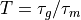
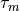
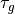
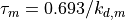
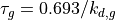

Integration time of species¶
Computes the distribution of the dimensionless integration time , where  is the transcript half-life and  is the protein half-life. The transcript half-life is  and the protein half-life is . The transcript and protein decay half-lives for 4 species, E. coli, S. cerevisiae, M. musculus, and H. sapiens, is in the folder ./half-lives.
import os,sys
import numpy as np
import scipy.stats as st
import math
import random as rand
import matplotlib.pyplot as plt
import glob
import pandas as pd
import scipy.stats as st
from matplotlib import rcParams
from matplotlib import ticker as mticker
data_directory = './half-lives'
os.chdir(data_directory)
wf = open('all-species_T.csv','w')
print('Species,Median,Var,95C,5C',file=wf)
wf.close()
Integration time distribution for E. coli.
Transcript half-life values were taken from, J. A. Bernstein, A. B. Khodursky, P.-H. Lin, S. Lin-Chao, and S. N. Cohen, Global analysis of mrna decay and abundance in escherichia coli at single-gene resolution using two-color fluorescent dna microarrays, Proceedings of the National Academy of Sciences 99, 9697 (2002).
Protein half-life values were taken from, N. Nagar, N. Ecker, G. Loewenthal, O. Avram, D. Ben-Meir, D. Biran, E. Ron, and T. Pupko, Harnessing machine learning to unravel protein degradation in escherichia coli, Msystems 6, e01296 (2021).
dataset_m = pd.read_csv('coli-mrna-half-life.csv')
dataset_p = pd.read_csv('coli-protein-half-life.csv')
gene_m = dataset_m['Gene'].to_list()
gene_p = dataset_p['Gene'].to_list()
data_m = dataset_m['Half-life (h)'].to_numpy()
data_p = dataset_p['Half-life (h)'].to_numpy()
T_samples = []
pair_m, pair_p = [], []
for i in range(0,len(gene_m)):
m = gene_m[i]
if m in gene_p:
ii = gene_p.index(m)
if float(data_m[i])>0.0:
r_p = 1.0/float(data_p[ii]) + 1.0/2.0
r_p = 1.0/r_p
r_m = float(data_m[i])
pair_p.append(0.693/(r_p*60))
pair_m.append(0.693/(r_m*60))
T_samples.append(r_p/float(data_m[i]))
Ts = np.array(T_samples)
minT = np.min(Ts)
maxT = np.max(Ts)
coli_Ts = np.array(T_samples)
bin_e = 10**np.linspace(math.log10(minT),math.log10(maxT),21)
rcParams['font.family'] = 'sans-serif'
rcParams['font.sans-serif'] = ['Times New Roman']
fig, (ax1, ax2) = plt.subplots(nrows=1,ncols=2, figsize=(8,5),gridspec_kw={'width_ratios':[1.5,1]})
ax1.scatter(np.array(pair_m),np.array(pair_p),color='darkblue',s=20,alpha=0.5,edgecolor='None')
ax1.set_xlabel(r'Transcript decay rate constant (min$^{-1}$)',size=16)
ax1.set_ylabel(r'Protein decay rate constant (min$^{-1}$)',size=16)
ax1.tick_params(axis='both',labelsize=16)
ax1.set_xscale('log')
ax1.set_yscale('log')
ax2.hist(Ts,bins=bin_e,rwidth=0.8,color='darkblue',alpha=0.5)
ax2.set_xscale('log')
ax2.tick_params(axis='both',labelsize=16)
ax2.set_xlabel('Dimensionless integration time',size=16)
ax2.set_ylabel('Count',size=16)
ax1.set_title('E. coli',style='italic',size=18,loc='right')
plt.tight_layout()
plt.savefig('coli_decay.png',dpi=300)
p95 = float("{:.0f}".format(np.percentile(Ts,95)))
p5 = float("{:.0f}".format(np.percentile(Ts,5)))
outstring = 'Coli,'+str(np.median(Ts))+','+str(np.var(Ts))+','+str(p95)+','+str(p5)
print(outstring,file=open('all-species_decay.csv','a'))
Integration time distribution for S. cerevisiae.
Transcript half-life values were taken from, P. Eser, C. Demel, K. C. Maier, B. Schwalb, N. Pirkl, D. E. Martin, P. Cramer, and A. Tresch, Periodic mrna synthesis and degradation co-operate during cell cycle gene expression, Molecular systems biology 10, 717 (2014).
Protein half-life values were taken from, A. Belle, A. Tanay, L. Bitincka, R. Shamir, and E. K. O’Shea, Quantification of protein half-lives in the budding yeast proteome, Proceedings of the National Academy of Sciences 103, 13004 (2006).
dataset_m = pd.read_csv('cerevisae-mrna-half-life.csv')
dataset_p = pd.read_csv('cerevisae-protein-half-life.csv')
gene_m = dataset_m['Gene'].to_list()
gene_p = dataset_p['Gene'].to_list()
data_m = dataset_m['Half-life (h)'].to_numpy()
data_p = dataset_p['Half-life (h)'].to_numpy()
T_samples = []
pair_m, pair_p = [], []
for i in range(0,len(gene_m)):
m = gene_m[i]
if m in gene_p:
ii = gene_p.index(m)
pair_p.append(0.693/(data_p[ii]*60))
pair_m.append(0.693/(data_m[i]*60))
T_samples.append(float(data_p[ii])/float(data_m[i]))
Ts = np.array(T_samples)
minT = np.min(Ts)
maxT = np.max(Ts)
yeast_Ts = np.array(T_samples)
bin_e = 10**np.linspace(math.log10(minT),math.log10(maxT),21)
rcParams['font.family'] = 'sans-serif'
rcParams['font.sans-serif'] = ['Times New Roman']
fig, (ax1, ax2) = plt.subplots(nrows=1,ncols=2, figsize=(8,5),gridspec_kw={'width_ratios':[1.5,1]})
ax1.scatter(np.array(pair_m),np.array(pair_p),color='orange',s=20,alpha=0.5,edgecolor='None')
ax1.set_xlabel(r'Transcript decay rate constant (min$^{-1}$)',size=16)
ax1.set_ylabel(r'Protein decay rate constant (min$^{-1}$)',size=16)
ax1.tick_params(axis='both',labelsize=16)
ax1.set_xscale('log')
ax1.set_yscale('log')
ax1.set_title('S. cerevisae',style='italic',size=18,loc='right')
ax2.hist(Ts,bins=bin_e,rwidth=0.8,color='orange',alpha=0.6)
ax2.set_xscale('log')
ax2.tick_params(axis='both',labelsize=16)
ax2.set_xlabel('Dimensionless integration time',size=16)
ax2.set_ylabel('Count',size=16)
plt.tight_layout()
plt.savefig('yeast_decay.png',dpi=300)
p95 = float("{:.0f}".format(np.percentile(Ts,95)))
p5 = float("{:.0f}".format(np.percentile(Ts,5)))
outstring = 'Yeast,'+str(np.median(Ts))+','+str(np.var(Ts))+','+str(p95)+','+str(p5)
print(outstring,file=open('all-species_decay.csv','a'))
Integration time distribution for M. musculus.
Both the transcript and protein half-life values were taken from, B. Schwanh ̈ausser, D. Busse, N. Li, G. Dittmar, J. Schuchhardt, J. Wolf, W. Chen, and M. Selbach, Global quantification of mammalian gene expression control, Nature 473, 337 (2011).
data = pd.read_csv('mouse_mrna_protein_half_lives.csv')
T_samples = []
pair_m, pair_p = [], []
for p,m in zip(data['Protein'],data['mRNA']):
if math.isnan(m) or math.isnan(p):
pass
else:
T_samples.append(float(p)/float(m))
pair_p.append(0.693/(p*60))
pair_m.append(0.693/(m*60))
Ts = np.array(T_samples)
minT = np.percentile(Ts,1)
maxT = np.percentile(Ts,99)
mouse_Ts = np.array(T_samples)
bin_e = 10**np.linspace(math.log10(minT),math.log10(maxT),21)
rcParams['font.family'] = 'sans-serif'
rcParams['font.sans-serif'] = ['Times New Roman']
fig, (ax1, ax2) = plt.subplots(nrows=1,ncols=2, figsize=(8,5),gridspec_kw={'width_ratios':[1.5,1]})
ax1.scatter(np.array(pair_m),np.array(pair_p),color='green',s=20,alpha=0.5,edgecolor='None')
ax1.set_xlabel(r'Transcript decay rate constant (min$^{-1}$)',size=16)
ax1.set_ylabel(r'Protein decay rate constant (min$^{-1}$)',size=16)
ax1.tick_params(axis='both',labelsize=16)
ax1.set_xscale('log')
ax1.set_yscale('log')
ax1.set_title('M. musculus',style='italic',size=18,loc='right')
ax2.hist(Ts,bins=bin_e,rwidth=0.8,color='green',alpha=0.6)
ax2.set_xscale('log')
ax2.tick_params(axis='both',labelsize=16)
ax2.set_xlabel('Dimensionless integration time',size=16)
ax2.set_ylabel('Count',size=16)
plt.tight_layout()
plt.savefig('mouse_decay.png',dpi=300)
p95 = float("{:.0f}".format(np.percentile(Ts,95)))
p5 = float("{:.0f}".format(np.percentile(Ts,5)))
outstring = 'Mouse,'+str(np.median(Ts))+','+str(np.var(Ts))+','+str(p95)+','+str(p5)
print(outstring,file=open('all-species_decay.csv','a'))
Integration time distribution for H. sapiens.
Transcript half-life values were taken from, C. C. Friedel, L. D ̈olken, Z. Ruzsics, U. H. Koszinowski, and R. Zimmer, Conserved principles of mammalian transcriptional regulation revealed by rna half-life, Nucleic acids research 37, e115 (2009).
Protein half-life values were taken from, S. B. Cambridge, F. Gnad, C. Nguyen, J. L. Bermejo, M. Kr ̈uger, and M. Mann, Systems-wide proteomic analysis in mammalian cells reveals conserved, functional protein turnover, Journal of proteome research 10, 5275 (2011).
dataset_m = pd.read_csv('sapiens-mrna-half-life.csv')
dataset_p = pd.read_csv('sapiens-protein-half-life.csv')
gene_m = dataset_m['Gene'].to_list()
gene_p = dataset_p['Gene'].to_list()
data_m = dataset_m['Half-life (h)'].to_numpy()
data_p = dataset_p['Half-life (h)'].to_numpy()
T_samples = []
pair_m, pair_p = [], []
for i in range(0,len(gene_m)):
if float(data_m[i])>0.0:
m = gene_m[i]
for j in range(0,len(gene_p)):
p = gene_p[j]
if type(p) is str:
if m in p:
T_samples.append(float(data_p[j])/float(data_m[i]))
pair_p.append(0.693/(data_p[j]*60))
pair_m.append(0.693/(data_m[i]*60))
Ts = np.array(T_samples)
minT = np.min(Ts)
maxT = np.max(Ts)
human_Ts = np.array(T_samples)
bin_e = 10**np.linspace(math.log10(minT),math.log10(maxT),21)
rcParams['font.family'] = 'sans-serif'
rcParams['font.sans-serif'] = ['Times New Roman']
fig, (ax1, ax2) = plt.subplots(nrows=1,ncols=2, figsize=(8,5),gridspec_kw={'width_ratios':[1.5,1]})
ax1.scatter(np.array(pair_m),np.array(pair_p),color='darkred',s=20,alpha=0.5,edgecolor='None')
ax1.set_xlabel(r'Transcript decay rate constant (min$^{-1}$)',size=16)
ax1.set_ylabel(r'Protein decay rate constant (min$^{-1}$)',size=16)
ax1.tick_params(axis='both',labelsize=16)
ax1.set_xscale('log')
ax1.set_yscale('log')
ax1.set_title('H. sapiens',style='italic',size=18,loc='right')
ax2.hist(Ts,bins=bin_e,rwidth=0.8,color='darkred',alpha=0.6)
ax2.set_xscale('log')
ax2.tick_params(axis='both',labelsize=16)
ax2.set_xlabel('Dimensionless integration time',size=16)
ax2.set_ylabel('Count',size=16)
plt.tight_layout()
plt.savefig('human_decay.png',dpi=300)
p95 = float("{:.0f}".format(np.percentile(Ts,95)))
p5 = float("{:.0f}".format(np.percentile(Ts,5)))
outstring = 'Sapiens,'+str(np.median(Ts))+','+str(np.var(Ts))+','+str(p95)+','+str(p5)
print(outstring,file=open('all-species_decay.csv','a'))
data_set = [np.log10(coli_Ts), np.log10(yeast_Ts), np.log10(mouse_Ts), np.log10(human_Ts)]
medians = []
q95, q5 = [], []
for d in data_set:
medians.append(np.median(d))
q95.append(np.percentile(d,95))
q5.append(np.percentile(d,5))
rcParams['font.family'] = 'sans-serif'
rcParams['font.sans-serif'] = ['Times New Roman']
fig, ax = plt.subplots(figsize=(5.5,4))
parts = ax.violinplot(data_set,showmeans=False,showmedians=False,showextrema=False)
cs = ['darkblue','orange','green','brown']
kk = 0
for vp in parts['bodies']:
vp.set_facecolor(cs[kk])
vp.set_alpha(0.35)
kk += 1
inds = np.arange(1, len(medians) + 1)
ax.vlines(inds, q95, q5, color='k', linestyle='-', lw=3)
ax.scatter(inds, medians, marker='o', color='white', s=30, zorder=3)
labels = ['E. coli', 'S. cerevisae', 'M. musculus', 'H. sapiens']
y_labels = [0.01,0.1,1,10,100,1000]
ax.set_xticks(np.arange(1, len(labels) + 1))
ax.set_xticklabels(labels,fontsize=16,style='italic',rotation=-15)
ax.yaxis.set_major_formatter(mticker.StrMethodFormatter("$10^{{{x:.0f}}}$"))
plt.ylabel(r'Dimensionless integration time, $T$',size=14)
plt.ylim(math.log10(0.05),math.log10(2000))
plt.yticks(fontsize=14)
plt.tight_layout()
plt.savefig('SpeciesIntegrationTimes.png',dpi=300)